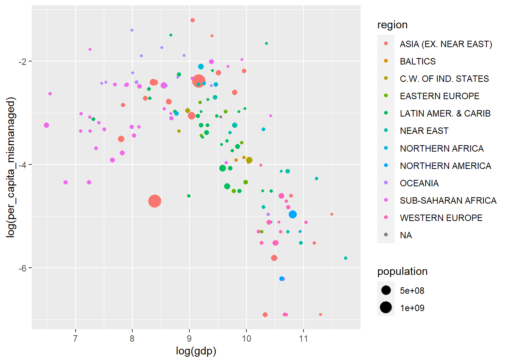

library(readr)
library(dplyr)
library(ggplot2)
plastic <- read_csv("data-plastic.csv")Assignment 3
Note
This assignment is to be handed in as an .R-file through Canvas. Your answer will be reviewed by a teaching assistant as well as two fellow students. Do take the time to condsider the feedback. You will also receive two random answers from fellow students for review. Try to find one positive aspect as well as one suggestion for improvement in each of the answers. You must complete both peer reviews in order to pass the assignment.
In this assignment we will visualize some of the data that was published here as part of the Tidy Tuesday project. There is one observation for each country of the world, and several interesting variables. One of them is the amount of mismanaged plastic waste in each country in a given year, and we will here build a plot using this data by adding more and more layers of complexity.
Download the data here, and load it into memory:
The warning message just says that the first column name is empty in the csv-file (confirm that by looking at the file if you wish), and that it has been given the generic name X1.
We would like to visualize the association between the GDP and the amount of mismanaged plastic waste in the countries of the world. Below you will find four figures of increasing complexity. Replicate them as best as you can, and feel free to spend a few minutes looking at and interpreting the graphs.
Step 1: A basic scatterplot of the log-transformed variables

Step 2: Make the dots reflect country size and continent

Step 3: Fix labels, add theme (you can choose whatever you want), change color palette